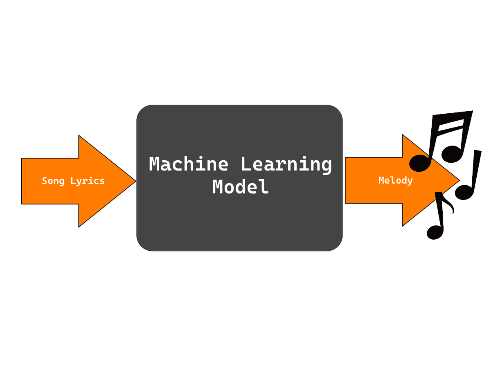
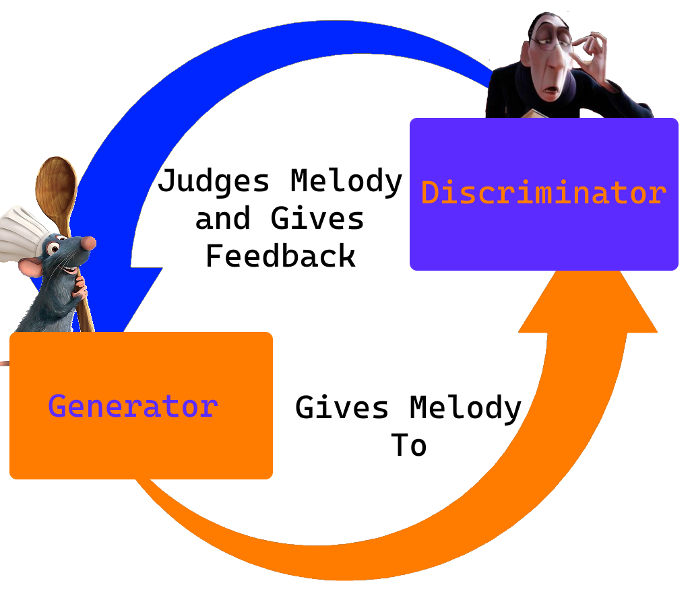

In order to create the music seen in this project, we use what is called machine learning, this is the same thing that many common services today use in order to learn about or create complex things that are traditionally extremely difficult for a computer to do. The way this can be thought of for our model is that you can give it some lyrics, and it will give you back the best melody it thinks goes with those lyrics.

Going into more detail, our model uses a Generative Adversarial Network, or GAN for short. While this sounds intimidating, it can be thought of as 2 models fighting against each other. During training, there is one model, the generator, that is trying its best to create music that will please the other model, the discriminator.
At the same time the discriminator is trying to become more picky, learning better to pick real or fake music. Every time the generator gives a new piece of music to the discriminator, it judges whether this could pass for real or not (it discriminates between real and fake music). Every time it judges it as fake, the generator learns not to make the same mistakes again, and will do better next time.
When it’s music passes as real, the generator learns to do things more like that.

Overall these 2 models are in opposition, the discriminator wants to be able to always know when music is real, and the generator wants to trick the discriminator by thinking their music is. The end goal of this process called training is that the generator will win, and give us music that sounds as if a real person made it.
This training can take a long time and a lot of data, for us to make this tool, it took 11,000 songs, as well as thousands of iterations of training, but the end result is we can now create unique music through the use of our trained model.